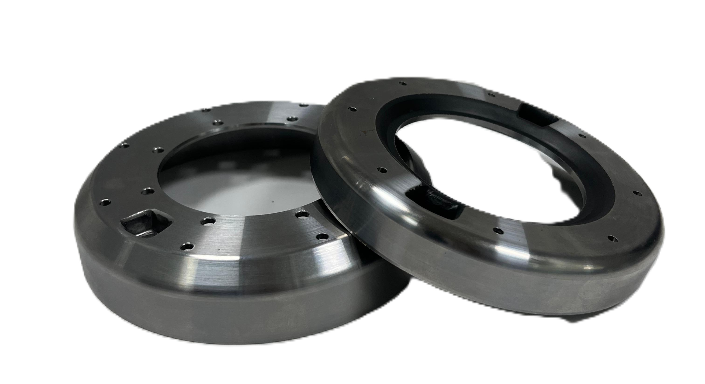

Deep-drawn steel components formed on 80–300 ton presses to tight concentricity and roundness, engineered for torsional vibration damper housings and structural automotive parts.
Deep drawing radially draws a flat steel blank into a forming die using controlled punch pressure, producing a hollow, seamless shell in one or more draw stages — without the thinning or cracking risk of over-stretching the material. It's the process JBMK already relies on for our Damper Housing product line, where high roundness and concentricity are needed to support a bonded elastomeric element with balanced rotation.
We run deep drawing on the same 80–300T press capacity used for our stamping lines, with dies designed in-house and dimensional verification on CMM after each draw stage — not only on the finished part.
Multi-stage draw capability across a wide range of shell diameters and depths.
Draw-stage dies engineered in our own toolroom to control wall thinning and springback.
Held to ≤0.05mm on parts that need to support bonded or press-fit elements.
Deep-drawn automotive parts produced under the same quality system as our pulley range.

| Parameter | Range |
|---|---|
| Material | Deep Drawing Steel (DD13 / DD14), SAPH440 |
| Diameter Range | Ø 120mm – Ø 220mm |
| Thickness | 2.0mm – 4.5mm |
| Concentricity | ≤ 0.05 mm |
| Roundness | ≤ 0.05 mm |
| Surface Treatment | Phosphate and Primer coated for bonding |
Deep drawing is the right process when a part needs a seamless, hollow shell with high roundness — damper housings, cans, and enclosures. Stamping (see our Stamped Pulleys page) is more economical for flatter, open-profile parts like brackets and grooved pulley bodies. Many of our components combine both: a deep-drawn shell followed by secondary stamping or machining operations. Send us your drawing and we'll confirm which process — or combination — fits.